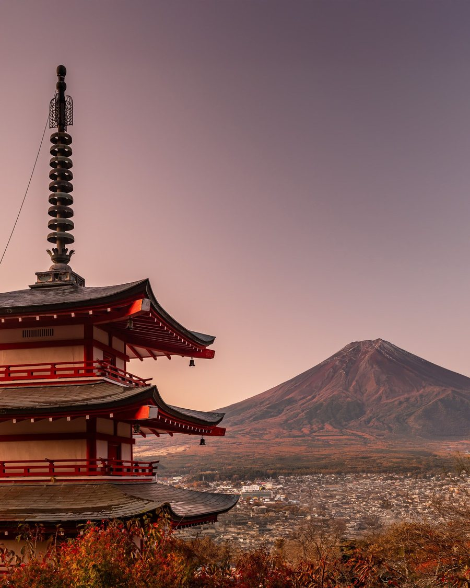
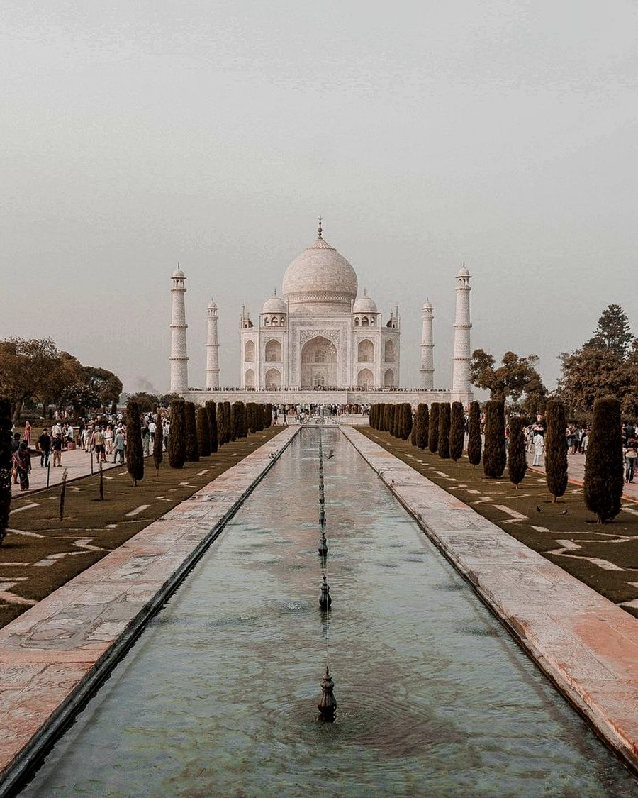
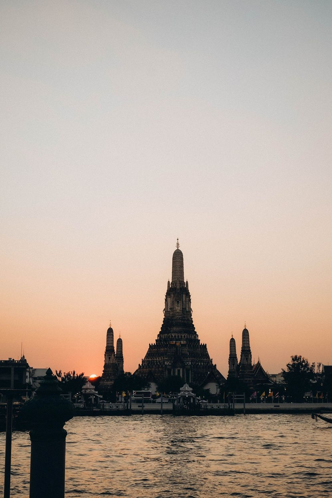

ស្វែងយល់
ប៉ារីស បារាំង
ការដើរតាមមាត់ទន្លេ តារ៉ាសកាហ្វេ និងទិដ្ឋភាពទីតាំងសំខាន់ៗ នៅក្នុងទីក្រុងដែលសមស្របនឹងការរកឃើញយឺតៗ។
រៀបចំដំណើរនេះ — ប៉ារីស បារាំងបង្កើតដំណើរផ្ទាល់ខ្លួន ផ្តល់បទពិសោធន៍ពិសេស
ឡា រ៉ូត ព្រីមៀម គឺជាក្រុមហ៊ុនគ្រប់គ្រងគោលដៅ (DMC) ឯកទេសខាងដំណើរកម្សាន្តឯកជនតាមតម្រូវការ និងសេវាគ្រប់គ្រងការធ្វើដំណើរគ្រប់ជ្រុងជ្រោយ។ យើងរចនាបទពិសោធន៍ធ្វើដំណើរតាមតម្រូវការ សម្រាប់បុគ្គល គ្រួសារ អតិថិជនក្រុមហ៊ុន និងក្រុមដែលមានចំណាប់អារម្មណ៍ពិសេស ដែលស្វែងរកដំណើរដែលពិតប្រាកដ រលូន និងគួរឱ្យចងចាំ។
ជាមួយនឹងជំនាញក្នុងតំបន់ និងការប្តេជ្ញាចិត្តលើសេវាកម្ម យើងបំប្លែងគំនិតធ្វើដំណើរទៅជាបទពិសោធន៍ដែលបានគ្រោងទុកយ៉ាងយកចិត្តទុកដាក់។ ទោះអ្នកស្វែងរកដំណើរសម្រាកលំហែប្រណីត ការស្វែងយល់វប្បធម៌ ដំណើរផ្សងព្រេង ដំណើររង្វាន់ ឬថ្ងៃឈប់សម្រាកឯកជនជាមួយគ្រួសារ ក្រុមការងាររបស់យើងដោះស្រាយគ្រប់ព័ត៌មានលម្អិតដោយវិជ្ជាជីវៈ និងការយកចិត្តទុកដាក់។

ចាប់ពីការរកឃើញទីក្រុង ដល់ការសម្រាកលំហែយឺតៗ សូមស្វែងរកឱ្យឆ្ងាយបន្តិចទៀត។
ស្វែងយល់
ការដើរតាមមាត់ទន្លេ តារ៉ាសកាហ្វេ និងទិដ្ឋភាពទីតាំងសំខាន់ៗ នៅក្នុងទីក្រុងដែលសមស្របនឹងការរកឃើញយឺតៗ។
រៀបចំដំណើរនេះ — ប៉ារីស បារាំង
ស្វែងយល់
បឹងអាល់ផ៍ ជ្រលងភ្នំបៃតង និងទេសភាពភ្នំ ដើម្បីរីករាយក្នុងល្បឿនមិនប្រញាប់។
រៀបចំដំណើរនេះ — ស្វីស
ស្វែងយល់
ប្រាសាទដូចរឿងនិទាន ទីក្រុងចាស់ប្រវត្តិសាស្ត្រ និងជនបទស្រស់ស្អាតដើម្បីស្វែងយល់។
រៀបចំដំណើរនេះ — អាល្លឺម៉ង់


ស្វែងយល់
វិមានប្រវត្តិសាស្ត្រ ពណ៌ស្រស់ស្អាត និងប្រពៃណីសម្បូរបែប នៅទូទាំងប្រទេសនៃដំណើរជាច្រើន។
រៀបចំដំណើរនេះ — ឥណ្ឌារៀបចំកម្មវិធីធ្វើដំណើររបស់អ្នក តាមចំណាប់អារម្មណ៍ ល្បឿនដែលអ្នកចូលចិត្ត និងកាលបរិច្ឆេទធ្វើដំណើរ។
គោលដៅត្រូវបានបង្ហាញជាការបំផុសគំនិត។ កម្មវិធីធ្វើដំណើរត្រូវបានរៀបចំតាមសំណើ ហើយមិនមានកញ្ចប់ថេរ ភាពអាចរកបាន ឬតម្លៃត្រូវបានផ្សព្វផ្សាយទេ។

អ្នកធ្វើដំណើរម្នាក់ៗមានលក្ខណៈពិសេស ហើយកម្មវិធីធ្វើដំណើរនីមួយៗដែលយើងបង្កើតក៏ដូចគ្នា។ យើងរចនាបទពិសោធន៍ធ្វើដំណើរផ្ទាល់ខ្លួន ដោយផ្អែកលើចំណាប់អារម្មណ៍ កាលវិភាគ រចនាបថធ្វើដំណើរ និងថវិការបស់អ្នក។
សមស្របសម្រាប់ បុគ្គល គ្រួសារ និងក្រុមដែលមានចំណាប់អារម្មណ៍ពិសេស
សួរអំពីសេវានេះ
យើងផ្តល់ដំណោះស្រាយគោលដៅពេញលេញ រួមមានភស្តុភារ កន្លែងស្នាក់នៅ ដឹកជញ្ជូន ការសម្របសម្រួលក្នុងតំបន់ និងជំនួយនៅទីកន្លែង សម្រាប់បុគ្គល និងក្រុម។
សមស្របសម្រាប់ បុគ្គល និងក្រុម
សួរអំពីសេវានេះ
ចាប់ពីដំណើរសម្រាកលំហែអ្នកគ្រប់គ្រង និងកម្មវិធីរង្វាន់ រហូតដល់ការប្រជុំ និងព្រឹត្តិការណ៍ពិសេស យើងផ្តល់ការគ្រប់គ្រងការធ្វើដំណើរប្រកបដោយវិជ្ជាជីវៈ ស្របតាមគោលដៅអាជីវកម្ម។
សមស្របសម្រាប់ អតិថិជនក្រុមហ៊ុន និងអង្គភាព
សួរអំពីសេវានេះ
រីករាយជាមួយសេវា VIP ការចូលដំណើរការពិសេស មគ្គុទ្ទេសក៍ឯកជន កន្លែងស្នាក់នៅលំដាប់ ៥ ផ្កាយ និងបទពិសោធន៍ផ្ទាល់ខ្លួនដែលបង្កើតឡើងតាមស្តង់ដារខ្ពស់បំផុត។
សមស្របសម្រាប់ អ្នកធ្វើដំណើរដែលចង់បានសេវា VIP និងបទពិសោធន៍តាមតម្រូវការ
សួរអំពីសេវានេះរូបថតគឺសម្រាប់បង្ហាញជាឧទាហរណ៍ ហើយមិនបង្ហាញដំណើរ ឬអតិថិជនពិតរបស់ La Route Premium ទេ។
បណ្តាញដៃគូសណ្ឋាគារ អ្នកដឹកជញ្ជូន មគ្គុទ្ទេសក៍មូលដ្ឋាន និងអ្នកផ្គត់ផ្គង់ទេសចរណ៍របស់យើង អនុញ្ញាតឱ្យយើងផ្តល់សេវាកម្មគុណភាពខ្ពស់ ដែលឆ្លុះបញ្ចាំងពីចរិតលក្ខណៈ វប្បធម៌ និងសម្រស់នៃគោលដៅនីមួយៗ។ ចាប់ពីការមកដល់ ដល់ការចាកចេញ គ្រប់ផ្នែកនៃដំណើររបស់អ្នកត្រូវបានរៀបចំឱ្យរលូន ងាយស្រួល និងផ្ទាល់ខ្លួន។
ដើម្បីក្លាយជាក្រុមហ៊ុនគ្រប់គ្រងគោលដៅឈានមុខគេ ដែលត្រូវបានគេទទួលស្គាល់ចំពោះបទពិសោធន៍ធ្វើដំណើរឯកជនពិសេស ដំណោះស្រាយទេសចរណ៍ច្នៃប្រឌិត និងសេវាអតិថិជនឆ្នើម។
ដើម្បីបង្កើតដំណើរដែលមិនអាចបំភ្លេចបាន តាមរយៈសេវាផ្ទាល់ខ្លួន ជំនាញក្នុងតំបន់ និងការធ្វើផែនការយ៉ាងហ្មត់ចត់ ព្រមទាំងលើកកម្ពស់ទេសចរណ៍ប្រកបដោយចីរភាព និងគាំទ្រសហគមន៍មូលដ្ឋាន។
យើងជឿថាការធ្វើដំណើរគួរតែលើសពីការទស្សនាទីកន្លែង។ វាគួរតែជាការស្វែងយល់វប្បធម៌ បង្កើតទំនាក់ទំនងដែលមានន័យ និងបង្កើតការចងចាំរហូតពេញមួយជីវិត។ យើងប្តេជ្ញាផ្តល់ជូនអតិថិជនគ្រប់រូបនូវបទពិសោធន៍ពិតប្រាកដ ការយកចិត្តទុកដាក់ផ្ទាល់ខ្លួន និងសេវាកម្មឆ្នើមគ្រប់ដំណាក់កាលនៃដំណើរ។
ចែករំលែកផែនការរបស់អ្នក ហើយយើងនឹងរៀបចំសំណើតាមសំណូមពរ។
ឬសរសេរមកយើងតាម៖ premiumsupport@laroutepremium.com